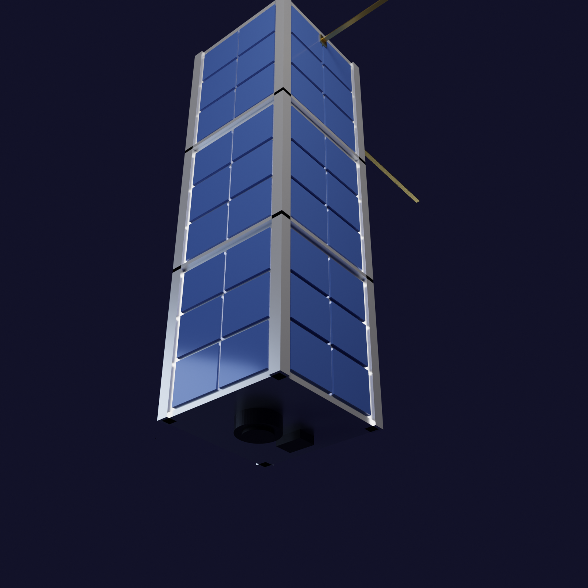
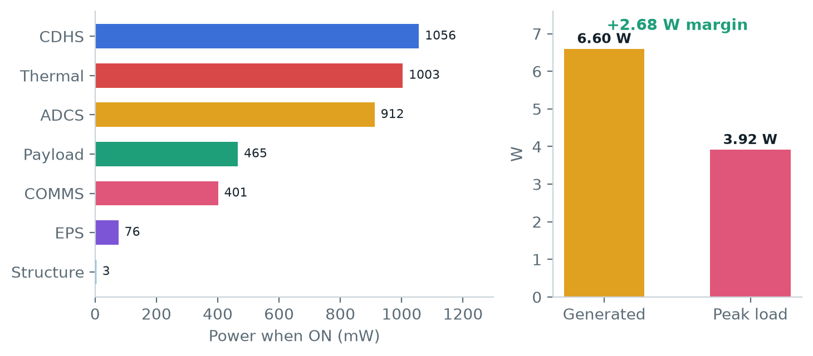
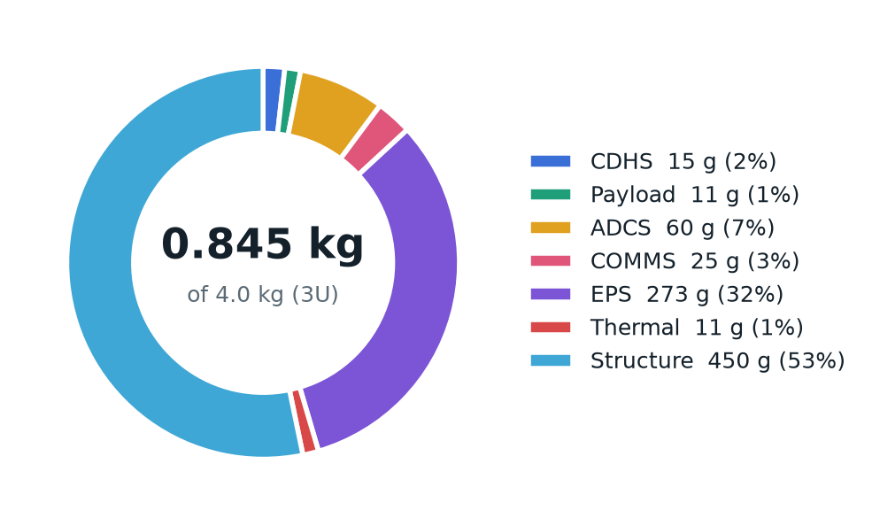

MARSAD-1
Contents
- 1Executive summary
- 2Problem & motivation
- 3Mission objectives & success criteria
- 4Orbit & concept of operations
- 5System architecture & subsystems
- 6Budgets: power, mass, volume, data, cost
- 7Prototype: Tinkercad circuit
- 83D design
- 9Ground segment & dashboard
- 10Risks & mitigations
- 11Next steps toward the final qualifier
- 12Key learnings
- AAppendix: links & repository
1Executive summary
MARSAD-1 (Arabic marsad, "observatory") is a 3U CubeSat designed by Team Kanban to detect and map harmful algal blooms ("red tides") and chlorophyll-a concentration along the UAE coastline of the Arabian Gulf and the Gulf of Oman. It flies in a 550 km sun-synchronous orbit, images UAE coastal waters with a 5 MP camera and an 11-channel spectral sensor, computes a chlorophyll index on board, and sends compact bloom alerts to a ground station in Abu Dhabi over a 433 MHz LoRa link.
All Phase 1 design budgets close with margin on the SpacePoint Madar mission designer, using a bill of materials of 17 real, purchasable components:
Phase 1 deliverables produced by the team:
- Individual and team Madar mission designs (setup, components, CONOPS, data, power, mass and cost budgets) — all phases cleared.
- A Tinkercad Arduino circuit that simulates the satellite's power, thermal, payload and communications mode logic and prints the same JSON telemetry the dashboard reads.
- A Tinkercad 3D model of the 3U spacecraft built to the CubeSat Design Specification envelope.
- A live interactive mission dashboard published on GitHub Pages, and a competition poster.
2Problem & motivation
Harmful algal blooms occur when certain species of phytoplankton multiply rapidly. Some species discolour the water red or brown ("red tides"), deplete dissolved oxygen as the bloom decays, or produce toxins. The warm, shallow and semi-enclosed waters of the Arabian Gulf and the Gulf of Oman are susceptible to such events, and large blooms have been recorded in the region.
For the UAE the impact is direct:
- Desalination — much of the country's drinking water comes from seawater desalination. Dense blooms can clog intake screens and foul pre-treatment filters and reverse-osmosis membranes, and plants have had to reduce output or shut down during severe events.
- Fisheries and aquaculture — oxygen depletion and toxins can cause fish kills and force closures.
- Coastal tourism and public health — discoloured water and dead fish on beaches, and potential toxin exposure.
3Mission objectives & success criteria
| Item | Statement |
|---|---|
| Primary objective | Detect and map harmful algal blooms (red tides) and chlorophyll-a concentration along the UAE coastline of the Arabian Gulf and Gulf of Oman using multispectral imaging, to give early warning to desalination plants, fisheries and coastal authorities. |
| Success criterion | Downlink at least one usable, cloud-free multispectral image of UAE coastal waters per day and deliver a chlorophyll-a bloom map to the ground team within 24 hours, for 6 consecutive months. |
| Minimum lifetime | 12 months. |
| Mission tasks | Nadir-pointed multispectral imaging during sunlit passes over the Gulf, onboard compression and bloom detection (NDCI), and downlink of alerts and data over UAE ground-station passes, with UHF telemetry and commanding. |
| Secondary objective | Demonstrate a low-cost (< 3,000 AED bill of materials) student CubeSat architecture with onboard data reduction. |
4Orbit & concept of operations
Orbit
| Type | Sun-synchronous (SSO) |
| Altitude | 550 km |
| Inclination | 97.6° |
| Local time of descending node | 10:30 |
| Period | 95 min |
| Orbits per day | 15 |
| Ground station | Abu Dhabi (24.45° N, 54.38° E), 10° elevation mask |
Why SSO at 550 km
A sun-synchronous orbit crosses the UAE at nearly the same local solar time every day, giving consistent illumination for ocean-colour measurements — important when comparing bloom maps day to day. A mid-morning node (10:30) avoids the strongest afternoon convection and sun glint. 550 km is a common rideshare altitude with a multi-year natural decay time, well beyond the 12-month mission.
Concept of operations — one 95-minute orbit
Timeline — nominal mode allocation per orbit (as entered in the Madar CONOPS phase; total 95 min = orbit period).
| Mode | Min / orbit | Active components | Load (W) |
|---|---|---|---|
| Sun-pointing (charging) | 40 | OBC, IMU, magnetorquers, solar array, EPS (battery, MPPT/BMS, bucks, INA219), temp sensors, structure switches | 1.64 |
| Nadir / payload imaging | 10 | Sun-pointing set + OV5640 camera, AS7341 spectral sensor, GPS, microSD | 2.52 |
| Ground-station pass | 10 | Sun-pointing set + GPS, SX1278 LoRa radio, antenna, microSD | 2.45 |
| Safe / eclipse | 35 | OBC, IMU, EPS, temp sensors, battery heater; magnetorquers and payload off | 1.88 |
Mode logic. The flight software enters safe whenever the satellite is in eclipse or battery state of charge drops below 20%. In sunlight it holds a sun-pointing, charging attitude; when the ground track crosses the UAE target box and charge is above 60% it switches to nadir imaging; inside the Abu Dhabi visibility circle it enters the ground-pass mode and downlinks queued alerts. The battery heater operates with hysteresis (on below 5 °C, off above 10 °C).
5System architecture & subsystems

CDHS — command & data handling
An ESP32-S3 (dual-core 240 MHz, 8 MB PSRAM, 16 MB flash) runs the flight-software state machine, schedules imaging, reads all sensors over I²C/SPI, and formats telemetry. A 32 GB microSD stores raw images, spectra and logs between ground passes. The ESP32-S3's camera interface (DVP) connects the imager directly.
Payload — bloom detection
The OV5640 5 MP camera captures RGB context imagery for visual confirmation. The AS7341 11-channel spectral sensor (350–1000 nm) measures water-leaving light in narrow bands. Chlorophyll-rich bloom water reflects more strongly in the red-edge (~708 nm) relative to the chlorophyll absorption band (~665 nm), which is captured by the Normalised Difference Chlorophyll Index:
NDCI is computed on board. Pixels or samples above a threshold are tagged, and a compact alert packet (location, index, time) is queued for the next ground pass. Full images are kept and downlinked selectively. On the AS7341 the closest available bands are used (F8 ≈ 680 nm and the NIR channel as the red-edge proxy); calibration against reference data is planned for the next phase.
ADCS — attitude determination & control
An ICM-20948 9-DoF IMU (gyro, accelerometer, magnetometer) provides attitude determination; a 3-axis magnetorquer set driven by a DRV8833 H-bridge detumbles the spacecraft (B-dot) and holds coarse sun/nadir pointing. A u-blox NEO-M8N GPS gives position for geotagging images and precise time for imaging schedules.
COMMS — communications
A Semtech SX1278 LoRa transceiver at 433 MHz (up to +20 dBm) carries telemetry, commands and bloom alerts. LoRa's long-range, low-rate modulation suits small alert packets. A deployable spring-steel tape monopole is released by a burn-wire after separation.
EPS — electrical power
Six 1.1 W body-mounted solar cells (6.6 W) charge a 2S Li-ion 18650 pack (7.4 V, 3.4 Ah, ≈ 25 Wh) through a CN3791 MPPT charger with 2S BMS. MP1584 buck converters provide regulated 5 V and 3.3 V rails, with load switching from the OBC, and an INA219 monitors bus voltage and current.
Thermal
A BME280 and DS18B20 probes monitor internal, battery and panel temperatures. A 1 W Kapton heater pad on the battery keeps the cells above 0 °C during the 35-minute eclipse.
Structure
A 3U aluminium 6061 frame (100 × 100 × 340.5 mm envelope, four 8.5 mm rails, 1U separator rings) with a PC/104-style board stack, following the CubeSat Design Specification, plus two deployment (kill) switches.
6Budgets
All budgets were computed and locked in the SpacePoint Madar mission designer. Power per component follows the designer's convention P = V × I at the operating point.
6.1 Power

| Mode | Load (W) | Min | mWh / orbit |
|---|---|---|---|
| Sun-pointing | 1.64 | 40 | 1,094 |
| Nadir imaging | 2.52 | 10 | 420 |
| Ground pass | 2.45 | 10 | 409 |
| Safe / eclipse | 1.88 | 35 | 1,098 |
| Total | 95 | 3,020 |
Sizing. Total load with every component on is 3.917 W (3,916.5 mW). With 1.1 W cells, ⌈3.917 / 1.1⌉ = 4 cells would just cover it; we selected 6 cells = 6.60 W, a +2.68 W (68%) margin that covers cosine losses of body-mounted cells and degradation.
Energy. 3.02 Wh is used per orbit (45.3 Wh per day). The 25 Wh battery covers the 35-minute eclipse load (≈ 1.1 Wh) with a shallow depth of discharge (≈ 4–5%), which favours cycle life.
6.2 Mass & volume

Mass: 0.845 kg against the 4.0 kg 3U limit — a 3.16 kg (79%) margin. The structure (450 g) and EPS (273 g, mostly the six panels and battery) dominate.
Volume: 500.6 cm³ of component volume against 3,000 cm³ available (the frame is counted by its material footprint, not its envelope). The large margin leaves room for harnessing, a larger battery, or a second payload in later phases.
6.3 Data
| Source | Type | Size / meas. | Meas. / min | Active min | Per day | Handling |
|---|---|---|---|---|---|---|
| OV5640 camera | Image | 500 KB | 1 | 10 | 75.0 MB | Stored; selected scenes downlinked |
| AS7341 spectral | Science | 0.05 KB | 60 | 10 | 450 KB | Stored + sent |
| ESP32-S3 OBC | Telemetry | 0.2 KB | 1 | 95 | 285 KB | Stored + sent |
| ICM-20948 IMU | Telemetry | 0.03 KB | 6 | 95 | 257 KB | Stored |
| NEO-M8N GPS | GPS/Nav | 0.1 KB | 6 | 20 | 180 KB | Stored + sent |
| SX1278 LoRa | TT&C | 0.25 KB | 6 | 10 | 225 KB | Sent |
| EPS / thermal / other | Housekeeping | 0.01–0.05 KB | 1–2 | 10–95 | small | Stored (key values sent) |
| Total generated: 5.00 MB per orbit | 75.0 MB | 74.78 MB stored · 1.42 MB sent | ||||
6.4 Cost & bill of materials
| # | Component | Subsystem | Qty | V | mA | P (mW) | Mass (g) | Cost (AED) | Vendor |
|---|---|---|---|---|---|---|---|---|---|
| 1 | ESP32-S3 on-board computer | CDHS | 1 | 3.3 | 240 | 792 | 10 | 60 | DigiKey |
| 2 | OV5640 5 MP camera | Payload | 1 | 3.3 | 140 | 462 | 8 | 45 | Arducam |
| 3 | AS7341 11-channel spectral sensor | Payload | 1 | 3.3 | 1 | 3.3 | 3 | 65 | Adafruit |
| 4 | ICM-20948 9-DoF IMU | ADCS | 1 | 3.3 | 4 | 13.2 | 3 | 55 | SparkFun |
| 5 | 3-axis magnetorquers + DRV8833 | ADCS | 1 | 5 | 150 | 750 | 45 | 120 | DigiKey |
| 6 | u-blox NEO-M8N GPS | ADCS | 1 | 3.3 | 45 | 148.5 | 12 | 75 | u-blox |
| 7 | SX1278 LoRa 433 MHz transceiver | COMMS | 1 | 3.3 | 120 | 396 | 5 | 35 | DigiKey |
| 8 | Deployable 433 MHz tape antenna | COMMS | 1 | 5 | 1 | 5 | 20 | 40 | Amazon.ae |
| 9 | Solar cell, 6 V 1 W | EPS | 6 | 6 | 1 | 6 | 150 | 150 | Amazon.ae |
| 10 | 2S Li-ion 18650 pack 7.4 V 3.4 Ah | EPS | 1 | 7.4 | 1 | 7.4 | 95 | 90 | DigiKey |
| 11 | CN3791 MPPT charger + 2S BMS | EPS | 1 | 7.4 | 5 | 37 | 10 | 40 | AliExpress |
| 12 | MP1584 buck converters (5 V, 3.3 V) | EPS | 2 | 7.4 | 3 | 22.2 | 16 | 40 | DigiKey |
| 13 | INA219 current/voltage monitor | EPS | 1 | 3.3 | 1 | 3.3 | 2 | 25 | Adafruit |
| 14 | MicroSD storage module (32 GB) | CDHS | 1 | 3.3 | 80 | 264 | 5 | 35 | Amazon.ae |
| 15 | BME280 + DS18B20 temperature sensors | Thermal | 1 | 3.3 | 1 | 3.3 | 6 | 30 | SparkFun |
| 16 | Kapton battery heater pad (1 W) | Thermal | 1 | 5 | 200 | 1000 | 5 | 35 | Amazon.ae |
| 17 | 3U Al-6061 frame + PC/104 stack | Structure | 1 | 3.3 | 1 | 3.3 | 450 | 480 | CubeSatShop |
| Total (17 line items) | 3,916.5 | 845 | 1,420 |
Cost: 1,420 AED against the 3,000 AED budget (1,580 AED margin). The frame is the most expensive item (480 AED); the margin can absorb a flight-grade antenna, spare parts and test equipment.
7Prototype: Tinkercad circuit
Before buying hardware we simulated the flight computer's sensing and mode logic in Tinkercad Circuits with an Arduino Uno standing in for the ESP32-S3. Circuit: tinkercad.com/things/cY2kWDnTdZB (Team Kanban – Circuit Design - Awaiz Ahmed).

| Pin | Part | Represents |
|---|---|---|
| A0 | TMP36 | Battery temperature |
| A1 | Photoresistor + 10 kΩ pull-down | Sun sensor (sunlit / eclipse) |
| A3 | Potentiometer (3.3 V) | Battery voltage → state of charge |
| D13 | Red LED + 220 Ω | Battery heater |
| D7 | Green LED + 220 Ω | Payload imaging (nadir) |
| D4 | Blue LED + 220 Ω | UHF downlink / ground pass |
| D9 | Micro servo | Antenna deployment |
Behaviour verified in simulation:
- Boot message, then the antenna servo rotates 0° → 90° five seconds after power-up (separation timer).
- Mode selection: safe if SoC < 20% or no sunlight; ground pass for 2 s of every 10 s once the antenna is out; nadir imaging if SoC > 60%; otherwise sun-pointing.
- Heater LED with 5 °C / 10 °C hysteresis on the TMP36 reading.
- Imaging and downlink LEDs follow the active mode.
Telemetry format
The sketch prints one JSON line per second over serial (9600 baud in Tinkercad, 115200 on the ESP32-S3). The dashboard's Web Serial connection reads the same keys:
MARSAD-1 boot - Team Kanban
{"soc":100.0,"v":8.40,"tbat":24.8,"sun":54,"mode":"nadir","heater":false,"antenna":false}
EVENT antenna deployed
{"soc":100.0,"v":8.40,"tbat":24.8,"sun":54,"mode":"gs","heater":false,"antenna":true}
Source: firmware/tinkercad_prototype/tinkercad_prototype.ino; ESP32-S3 flight sketch with INA219, BME280, DS18B20, AS7341 and NDCI: firmware/marsad_telemetry/marsad_telemetry.ino.
83D design
The spacecraft was modelled to the CubeSat Design Specification 3U envelope and assembled in Tinkercad 3D: tinkercad.com/things/4Qi0WBiqTus (Team Kanban – 3D Design - Awaiz Ahmed). Parts were generated parametrically (cad/make_cubesat.py), imported as colour-separated STL parts and rendered in Blender.

| Feature | Detail |
|---|---|
| Envelope | 100 × 100 × 340.5 mm (3U) |
| Frame | Four 8.5 mm corner rails, top and bottom plates, two 1U separator rings |
| Solar cells | 72 body-mounted cell areas (2 × 3 per unit, 4 faces, 3 units) |
| Nadir face | Camera lens barrel and spectral-sensor window |
| Zenith face | GPS patch antenna, two deployment kill switches |
| Antennas | Two deployed 433 MHz tape elements (170 mm) with hinge blocks |
| Colours | Silver (Al-6061), deep blue (cells), gold (antennas), black (optics) |
9Ground segment & dashboard
The mission dashboard is live at 4waiz.github.io/marsad-1-dashboard and is open source.

- Operations — ground track from a sun-synchronous orbit propagator, eclipse and Abu Dhabi pass prediction, current CONOPS mode, subsystem status and an event log. A time warp (1×–300×) lets a full orbit be watched in minutes.
- Telemetry — battery state of charge, generated vs consumed power, internal/battery/panel temperatures and onboard storage.
- Bloom watch — a chlorophyll-a (NDCI) map of UAE waters with watch/warning status for desalination plants and fisheries.
- Prototype link — a Connect prototype (USB) button uses the browser's Web Serial API (Chrome/Edge) to read the JSON telemetry from the hardware and switch the panels from simulated to live data.
10Risks & mitigations
| Risk | Impact | Mitigation |
|---|---|---|
| Cloud cover hides the target | Medium | 15 orbits/day and daily revisits; multi-day composites; bloom alerts only from cloud-free samples; success criterion requires one usable image per day, not per pass. |
| Downlink capacity (1.42 MB/day) | High | Onboard NDCI processing; send alerts and thumbnails, not raw imagery; prioritise bloom-flagged scenes; option for additional ground stations. |
| Radiation effects on COTS electronics (latch-up, bit flips) | High | Watchdog and safe mode, INA219 over-current detection with load power-cycling, CRC on stored data, periodic reboots. |
| Battery too cold in eclipse | Medium | Kapton heater with hysteresis; battery temperature monitoring; heater energy already in the power budget. |
| Coarse pointing with magnetorquers only | Medium | Wide field-of-view imaging; GPS + IMU geotagging; image only when attitude is stable. |
| Antenna fails to deploy | Medium | Redundant burn-wire activation attempts; beacon via stowed antenna at reduced range. |
| NDCI accuracy without calibration | Medium | Ground calibration against reference ocean-colour data; conservative thresholds; human-in-the-loop confirmation with RGB images. |
| Schedule for the physical prototype | Medium | Parts chosen from stocked distributors; simulation-first development; tasks split by subsystem owner. |
11Next steps toward the final qualifier
- Physical prototype on an ESP32-S3 with the INA219, BME280, DS18B20 and AS7341 breakouts, running marsad_telemetry.ino and streaming to the dashboard over USB.
- Multisim simulation of the EPS (solar input, MPPT charging, buck regulation) and the heater driver, with a recorded walkthrough.
- Testing — sensor calibration, mode-switch tests with a lamp as the "sun", thermal test of the heater loop, LoRa range test between two modules, battery charge/discharge cycles.
- Link budget for the 433 MHz downlink at 550 km and the Abu Dhabi ground station.
- Algorithm work — NDCI thresholds and calibration using public ocean-colour reference data.
- Final deliverables — prototype video, technical report, final dashboard and recorded presentation.
12Key learnings
- Budgets drive the design. The power budget set the array at six cells and made the eclipse heater a visible line item.
- Downlink, not mass, is the bottleneck. Capturing 75 MB/day while sending 1.42 MB/day forced onboard processing.
- Mass is easy in a 3U; layout, cabling and heat paths are not. We used under a quarter of the mass limit but must still plan volume and thermal paths.
- Simulate first. Tinkercad exposed wiring mistakes and let us test the mode logic before buying parts.
- One source of truth. A shared live dashboard kept four subsystem owners working from the same numbers.
AAppendix: links & repository
| Item | Link |
|---|---|
| Live dashboard | https://4waiz.github.io/marsad-1-dashboard/ |
| Source repository | https://github.com/4waiz/marsad-1-dashboard |
| Tinkercad circuit | https://www.tinkercad.com/things/cY2kWDnTdZB |
| Tinkercad 3D design | https://www.tinkercad.com/things/4Qi0WBiqTus |
| Prototype firmware | firmware/tinkercad_prototype/ · firmware/marsad_telemetry/ |
| CAD & render scripts | cad/make_cubesat.py · cad/render_cubesat.py |
The cover image is an AI-generated artist's impression. All other figures are produced from the team's own design data, models, circuit and dashboard.